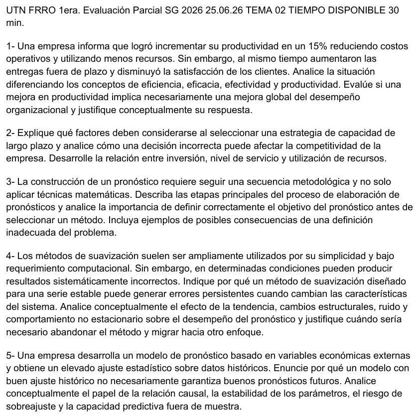

1° parcial 25/06/2026, teoría, tema 2
1° parcial, 25/06/2026
Enunciado


Propuesta de respuesta
Respuesta no verificada. La propuso Luta Studios con inteligencia artificial y ningún docente la revisó. Puede tener errores.
1. Más productividad con peores entregas.
- Eficiencia. Subió. Reducir costos y usar menos recursos es hacer las cosas al costo más bajo posible (Chase, pág. 6). Con la misma salida, un 15% más de productividad equivale a usar un 13% menos de insumos, porque .
- Eficacia. Bajó. Más entregas fuera de plazo y clientes menos satisfechos es no hacer lo correcto para crear valor (Chase, pág. 6).
- Productividad. Es salidas sobre entradas (Chase, pág. 28), y en general una medida parcial de un insumo. No ve el plazo ni la satisfacción.
- Efectividad. Si es cumplir eficiencia y eficacia a la vez, según una recopilación de estudiantes, no la hay.
Una mejora de productividad no implica una mejora global. Chase lo dice con el mostrador. Maximizar eficiencia y eficacia a la vez trae conflictos (pág. 6). Además, el valor es la calidad dividida por el precio (pág. 6). Si la calidad que percibe el cliente baja, el valor baja aunque el costo también lo haga, y la empresa puede perder clientes (Chase, pág. 123).
2. Estrategia de capacidad de largo plazo. Su objetivo es un nivel general de capacidad de recursos de capital intensivo que apoye la estrategia competitiva de largo plazo (Chase, pág. 123). Estos son los factores para elegirla.
- La demanda pronosticada, por producto (Chase, págs. 128 y 129).
- Escala. Mientras una planta crece hay economías de escala, y si se hace demasiado grande, deseconomías (Chase, pág. 124).
- Equilibrio, frecuencia y fuentes externas. Que el sistema quede equilibrado, cada cuánto hacer los aumentos y si conviene subcontratar (Chase, pág. 127).
- Flexibilidad de plantas, procesos y trabajadores (Chase, págs. 126 y 127), y la curva de aprendizaje (pág. 125).
- El colchón, la capacidad por encima de la demanda (Chase, pág. 129).
Una decisión incorrecta afecta la competitividad por los dos lados. Con capacidad de menos se pierden clientes por un servicio lento y entran los competidores. Con capacidad de más hay que bajar precios, se subutiliza el personal y sobra inventario (Chase, pág. 123).
| Si el colchón es | Inversión | Nivel de servicio | Utilización |
|---|---|---|---|
| Grande, demanda 10 y capacidad 12 (20%) | Alta | Alto, absorbe picos | Baja |
| Negativo, demanda 12 y capacidad 10 (−16,7%) | Baja | Bajo, no llega a la demanda | Al tope |
(Chase, págs. 124 y 129.) Más inversión compra más servicio a costa de una utilización menor.
3. Etapas del pronóstico y el objetivo.
- Formular el problema y recopilar datos.
- Manipular y limpiar los datos.
- Construir y evaluar el modelo.
- Implementar el modelo.
- Evaluar el pronóstico con datos recientes que se dejaron afuera.
(Hanke, págs. 5 y 6.) El primer paso define qué se quiere decidir, y el libro lo arma con preguntas. Por qué hace falta, quién lo usa, qué detalle y horizonte tiene, qué datos hay, cuánto cuesta, qué exactitud se pide, si llega a tiempo y cómo se retroalimenta (Hanke, pág. 6). Eso va antes del método porque la técnica depende del patrón, del horizonte y de los datos que hay (Hanke, págs. 78 a 80).
Ejemplos de una mala definición.
- Pronosticar las ventas totales cuando el plan de capacidad necesita un pronóstico por producto (Chase, págs. 128 y 129).
- Elegir un horizonte corto para una decisión de largo plazo, como una ampliación de planta, que se decide a más de un año (Chase, pág. 122).
- Pedir más exactitud de la que justifica el costo del pronóstico.
4. Suavización con errores persistentes. Un método pensado para una serie estable supone un nivel que oscila alrededor de una media constante. Cuando el sistema cambia, falla de forma sistemática.
- Tendencia. «Siempre que existe una tendencia sostenida, la suavización exponencial permanecerá retrasada» (Hanke, pág. 126). Los errores tienen todos el mismo signo.
- Cambios estructurales. Promedios y suavización andan mal ante cambios drásticos (Hanke, págs. 79 y 80). Con chico tarda en llegar al nivel nuevo.
- Ruido. Con grande el pronóstico copia cada fluctuación.
- No estacionario. Con estacionalidad, un método sin ese componente repite el nivel de un trimestre en otro distinto.
Hay que abandonarlo cuando la señal de control se sale de los límites, por ejemplo con muchos errores del mismo signo o un error mayor que dos veces el RMSE (Hanke, págs. 124 a 126). Primero se prueba actualizar , y si sigue, se cambia de método (pág. 126). Holt agrega la tendencia y Winters, la estacionalidad (págs. 126 a 132).
5. Buen ajuste histórico no es buen pronóstico. El modelo que mejor representa lo histórico no garantiza mayor exactitud futura, y los métodos simples a menudo son igual de exactos que los complejos (Hanke, pág. 81).
- Relación causal. La correlación no prueba causalidad (Hanke, págs. 38 y 39). Dos variables pueden moverse juntas en el pasado sin que una explique a la otra.
- Estabilidad de los parámetros. El pasado sirve mientras sigan las condiciones que lo causaron (Hanke, pág. 166). Si cambia la relación con las variables externas, los coeficientes ya no valen.
- Sobreajuste. Un modelo que copia hasta las particularidades del período de ajuste lo explica muy bien y no por eso pronostica mejor.
- Fuera de muestra. Por eso el quinto paso evalúa con datos recientes que quedaron afuera del ajuste (Hanke, págs. 5 y 6).
Respuesta no verificada. Puede tener errores.
Se armó con 1° parcial, secciones Productividad, eficiencia y eficacia, Capacidad, Los cinco pasos del pronóstico, Suavización exponencial, Señal de control y Ajustar bien lo pasado no asegura acertar el futuro.
Quedó en duda: El término sobreajuste no está en los capítulos del Drive, y su explicación en 5 es propia. La efectividad sale de una recopilación de estudiantes. Los ejemplos de mala definición del problema en 3 son propios, armados con Chase y Hanke. La tabla del colchón cruza los ejemplos de Chase con las consecuencias de exceso e insuficiencia, y el reparto de inversión y servicio es una lectura propia.
¿Cómo te fue?
Marcá cada tema del examen.
- ProductividadProductividad, eficiencia y eficacia, en 1° parcial
- CapacidadCapacidad, en 1° parcial
- Pasos del pronósticoLos cinco pasos del pronóstico, en 1° parcial
- SuavizaciónSuavización exponencial, en 1° parcial
- RegresiónRegresión, en 1° parcial